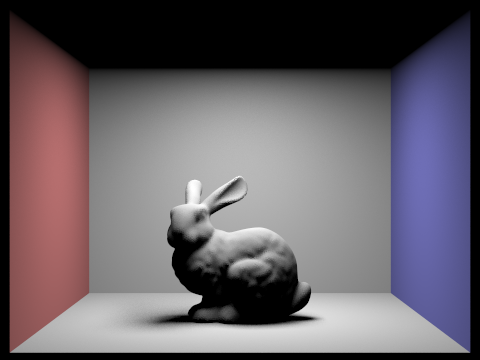

In this project, we developed a pathtracer with advanced features. In
Part 1, we focused on ray generation and scene intersection using
techniques like perspective projection and the Moller Trumbore algorithm
for triangle intersection. Part 2 introduced a Bounding Volume Hierarchy
(BVH) to accelerate ray tracing, reducing rendering times for complex
scenes. We covered steps such as computing bounding boxes, choosing
splitting axes, and recursively constructing the BVH. In Part 3, we
enhanced the pathtracer with direct illumination, comparing uniform
hemisphere sampling with importance sampling. The latter provided
smoother results in light-surface interactions. Part 4 explored global
illumination, addressing indirect lighting, maximum ray depth, Russian
Roulette rendering, and sample-per-pixel rates. Screenshots illustrated
the impact of settings on visual richness. Part 5 delved into adaptive
sampling, dynamically adjusting samples based on pixel color variance.
Confidence intervals and early termination for low-variance pixels
ensured computational efficiency without compromising quality. Our
project showcased a comprehensive pathtracer with optimizations,
demonstrating our grasp of computer graphics principles and effective
application in a complex rendering environment.
Part 1: Ray Generation and Scene Intersection
Generating Rays and Primitive Intersection
We determine the original point's position and project it onto the
screen. To find
new_x and
new_y, we
center the original rectangle screen defined by (0, 0) and (1, 1) at (0,
0), resulting in (x - 0.5, y - 0.5). The relative positions of
x and
y in the
original screen remain the same as
new_x and
new_y. This
leads to the equations:
\[\frac{(x - 0.5)}{1} = \frac{\text{new_x}}{(2 \cdot
\tan(\text{radians(hFov) * .5}))}\] \[\frac{(y - 0.5)}{1} =
\frac{\text{new_y}}{(2 \cdot \tan(\text{radians(vFov) * .5}))}\]
We obtain
Vector3D ray_vector = Vector3D(new_x, new_y, -1.0). After obtaining the position of the projected point, we calculate the
direction vector of
result_ray
using matrix multiplication
c2w * ray_vector. Finally, we set the visible boundary for this ray between nClip and
fClip, which we will update later.
Process walkthrough
Ray generation begins with casting rays from the virtual camera into the
scene. Each ray is defined by its origin (the camera's position) and a
direction (pointing through a pixel on the camera plane). These rays
traverse the scene, interacting with objects along their directions. The
primitive intersection stage involves determining if a ray intersects
with any geometric primitives(sphere, triangle, etc.) in the scene. This
process employs the function
Triangle::intersect
or
Sphere::intersect. When an intersection is detected, information about the point of
intersection, such as its position, surface properties, and material
characteristics, will be upadted in the struct
Intersection* isect.
triangle intersection algorithm
We used the Moller Trumbore Algorithm that we have discussed in lecture.
After following the steps and get the vector containing [t, alpha,
beta], we first see if t is between
r.min_t and
r.max_t and if
alpha and beta are within [0, 1]. If any of the condition fails, the
intersection is not suppose to happen and we return false. If both
conditions are met, we update the intersection information to
Intersection* isect, including the filed t, primitive, bsdf and n(calculated by doing
barycentric interpolation with the current three norms and the alpha,
beta, gamma values that we calculated above.) We also updated ray.max_t
to t.
Screenshots
Part 2: Bounding Volume Hierarchy
BVH construction algorithm
Following are our steps for constructing BVH
Compute the Bounding Box (bbox): We start by computing the
bounding box that encloses all the primitives between
start and
end. The
bounding box is computed by iteratively expanding it to include the
bounding boxes of individual primitives using function
bbox.expand.
Choose Splitting Axis: We then choose the splitting axis based
on the maximum extent of the bounding box. The axis is selected to be
the one along which the bounding box has the maximum size. This
heuristic helps achieve a more balanced partitioning.
Check Leaf Node Condition: If the number of primitives in the
current range is less than or equal to
max_leaf_size, the current node becomes a leaf node. We just create a leaf node
and set its start and end field with the input
start and
end.
Partition Primitives: If the number of primitives exceeds
max_leaf_size, we partition the primitives along the chosen axis. We used the
function
nth_element
to partially sort the primitives based on their centroids along the
selected axis. This effectively places the median primitive at the
position that separates the primitives into two groups.
Construction: Then, we recursively constructs the left and
right child nodes of the current node, each covering a subset of the
primitives. The left child covers the range [start, start + size/2),
and the right child covers the range [start + size/2, end]. Finally,
we return the current node.
screenshots of large images with normal shading
Render Time Comparison Analysis
Before implementing BVH acceleration, the rendering time for cow and the
other .dae file shown in the screenshots below were close to a minute.
After implementing BVH, the rendering time for cow is around 1 second.
And all the other large .dae files(the ones above) all takes less than
1.5 seconds to complete. The speed-up is much faster, we think this is
because once a ray does not intersect with a node's bbox, we do not test
for intersection between the ray and the primitives contained by the
node, which saves us a lot of computation.
Part 3: Direct Illumination
Walkthough for
Vector3D PathTracer::estimate_direct_lighting_hemisphere
Sampling Loop for Direct Lighting: We start a num_samples times
loop to sample the hemisphere around the hit point, considering the
lights in the scene.
Sample Light: Within the loop, we get the sampled light by
calling
isect.bsdf->sample_f. This function returns the sampled reflected direction wj and the
corresponding probability density function (pdf). Then, we multiply
the direction vector by
o2w to get
the transformed vector and normalize it. Then, we construct the
sampleray using hit_p as origin and the normalized vector as direction
with its min_t set to EPS_F and max_t set to INF_D.
Check for Intersection: If sampleray intersects with the scene,
we calculate the contribution for L_out by this sampleray using the
function
lightIsect.bsdf->get_emission() * f * abs_cos_theta(wj) / pdf
and add it to L_out.
Normalizing Output: Finally, we return the light estimator
equals to L_out / num_samples.
Walkthough for
Vector3D PathTracer::estimate_direct_lighting_importance
Calculate the hit point hit_p by extending the ray to the
intersection distance isect.t. Determine the direction of
the ray coming from the hit point (w_out) by transforming
the negative ray direction from world to object space.
Initialize variables for the loop over lights, determining the number
of samples based on whether the light is a delta light. For delta
lights, take only one sample; otherwise, use the variable
ns_area_light.
Inside the loop over light sources, sample the light using the
sample_L function to obtain the direction
wj towards the light, the distance to the light
distToLight, and the probability density function
pdf. Transform wj to object space and
normalize it.
Create a shadow ray from the hit point to the sampled light direction,
setting its minimum and maximum t-values to avoid self-intersection.
Perform a shadow ray intersection test with the BVH, checking for
obstructions between the hit point and the light source. Skip the
sample if an intersection occurs within the valid range.
Calculate the contribution of this light sample to the overall
lighting at the hit point. This involves evaluating the emission from
the light, the bidirectional scattering distribution function (BSDF)
using the f function, the cosine term, and dividing by
the probability density function. Accumulate these contributions for
all samples and lights.
The result L_out represents the estimated direct lighting
at the intersection point, considering importance sampling from light
sources. Return this result, taking into account the number of samples
used for each light source.
Comparison and Analysis of uniform hemisphere sampling and lighting
sampling
CBspheres_lambertian.dae using estimate_direct_lighting_hemisphere
CBspheres_lambertian.dae using estimate_direct_lighting_importance
CBbunny.dae using estimate_direct_lighting_hemisphere
CBbunny.dae using estimate_direct_lighting_importance
CBcoil.dae using estimate_direct_lighting_hemisphere
CBcoil.dae using estimate_direct_lighting_importance
CBgems.dae using estimate_direct_lighting_hemisphere
CBgems.dae using estimate_direct_lighting_importance
Uniform hemisphere sampling provides an unbiased, yet more visually
noisy representation, especially in regions where there are intricate
interactions between light and surfaces. In contrast, light sampling, by
strategically sampling directions based on the light source, tends to
produce smoother results with reduced noise levels in areas affected by
soft shadows.
Comparison Between Noise Levels in Soft Shadows Using Lighting Sampling
CBbunny.dae l = 1, s = 1CBbunny.dae l = 4, s = 1
CBbunny.dae l = 16, s = 1CBbunny.dae l = 64, s = 1
As the number of light rays (l) increases in the rendering process with
light sampling, the transitions of shadows become smoother and the
presence of noisy pixels diminishes. This improvement is attributed to
the increased number of samples per pixel, leading to more accurate and
refined estimations of soft shadows, resulting in a visually smoother
and less noisy appearance in the illuminated regions of the scene.
Part 4: Global Illumination
Implementation
Get Vertex: obtains iterators for the four vertices in the diagram
connected to the halfedges. These iterators are used to update the
vertices' halfedge pointers after the flip.
Get Face: obtains iterators for the two faces, namely Left and Right,
that the two halfedges being flipped belong to. These iterators are
used to update the faces' halfedge pointers after the flip.
Update Halfedge Neighbors (via
setNeighbors()): updates the neighbor pointers of the four halfedges involved in
the flip. This step reconfigures the connections between halfedges to
reflect the flipped edge.
Update Halfedge Next Pointers: updates the "next" pointers of two
halfedges to reverse their order in the counter-clockwise direction
around their respective faces.
Update Vertex Halfedge Pointers: updates the "halfedge" pointers of
the four vertices involved in the flip to point to their new
corresponding halfedges after the flip.
Screenshots for global (direct and indirect) illumination
Comparison between rendered views using only direct illumination or
indirect illumination
using only direct illuminationusing only indirect illumination
ScreenShots and Analysis for mth bounce of light for CBbunny.dae with
isAccumBounces=false
m = 0

m = 1
m = 2m = 3
m = 4m = 5
The 2nd bounce represents light that bounces once off surfaces before
reaching the camera, and the 3rd bounce extends this process further. We
can see that as m gets highter, the rendered lights gets dimmer and and
smoother. This is because there are loss in light reflection using the
process according to the contiunous probability we we add in every
recursive call in
at_least_one_bounce_radiance
ScreenShots and Analysis for mth bounce of light for CBbunny.dae with
isAccumBounces = true
m = 0m = 1
m = 2m = 3
m = 4m = 5
Higher max_ray_depth values result in more complex indirect lighting
effects, such as color bleeding, reflections, and global illumination.
These effects enhance the realism and visual richness of the rendered
image compared to rasterization, where indirect lighting is challenging
to achieve accurately.
ScreenShots for Russian Roulette rendering for CBbunny.dae
m = 0m = 1
m = 2m = 3
m = 4m = 100
Comparison of rendered views with various sample-per-pixel rates
s = 1s = 2
s = 4s = 8
s = 16s = 64
s = 1024
Task 5: Adaptive Sampling
Explanation of the Adaptive Sampling
Adaptive sampling dynamically adjusts the number of samples taken during
rendering based on the variance in pixel color. In the provided code,
after processing a batch of samples, the algorithm computes the mean and
variance of radiance values and calculates a confidence interval width.
If the interval width is below a specified tolerance relative to the
mean, the sampling loop breaks early, optimizing computational resources
by allocating more samples to pixels with higher uncertainty and fewer
samples to those with lower uncertainty.
Implementation of the Adaptive Sampling
Additional to our implementation from part1, we added the variables
s1 (sum of
xk)and
variance (sum
of xk{2}) Reuse the for loop that we had before, in each loop, we set xk
as the return value from
est_radiance_global_illumination.illum(), update s1 and s2. We also added a if statement checking if the number
of samples that we have sampled is a multiple of
samplesPerBatch, we check if 1.96 · √n
/ σ < maxTolerance · mean. If false, the sample has not
converged and we will keep looping; if yes, the sample has converged and
we will break the loop. Finally, we update
sampleCountBuffer
at the corresponding index to be num_samples.